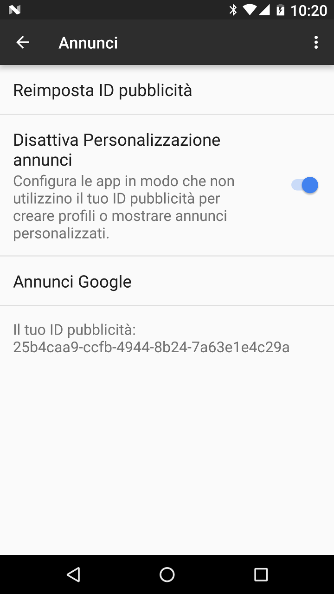

Alcuni anni fa il W3C (World Wide Web Consortium) ha creato per i browser un meccanismo per informare i web server che preferiscono non essere tracciati. Questo è ottenuto attraverso l'inclusione nella richiesta al server di un header denominato: DNT (Do Not Track).
L'header DNT in realtà non garantisce nessuna privacy dal momento che la maggior parte dei web server lo ignora, come ad esempio Yahoo, Google, Microsoft e Facebook, che ignorano tutti almeno alcuni degli header DNT.
Privacy Browser Free mostra nella parte inferiore dello schermo un banner pubblicitario che è popolato attraverso la Google’s AdMob network. Di default Google fornisce la advertising ID del dispositivo agli annunci mostrati. Questa pratica permette alle compagnie pubblicitarie la creazione di un profilo del dispositivo che mostri quali app sono installate (quelle che mostrano l'annuncio), la loro frequenza di utilizzo, gli annunci che interessano all'utente.
Gli utenti possono scegliere di disattivare la advertising ID in Impostazioni, Google, Annunci.
Lo scopo della versione free di Privacy Browser è quello di permettere agli utenti di provare la app e le sue funzionalità. La versione standard può essere acquistata su tutti i principali app stores o scaricata gratuitamente da F-Droid.
Verizon, uno dei principali vettori mobili negli Stati Uniti, aggiunge un tracking header a tutto il traffico HTTP non criptato sulla propria rete. La Electronic Frontier Foundation ha preso posizione relativamente alle implicazioni sulla privacy di questa pratica. Per effetto della pressione dell'opinione pubblica Verizon ha messo a disposizione la possibilità di disattivare il tracking.